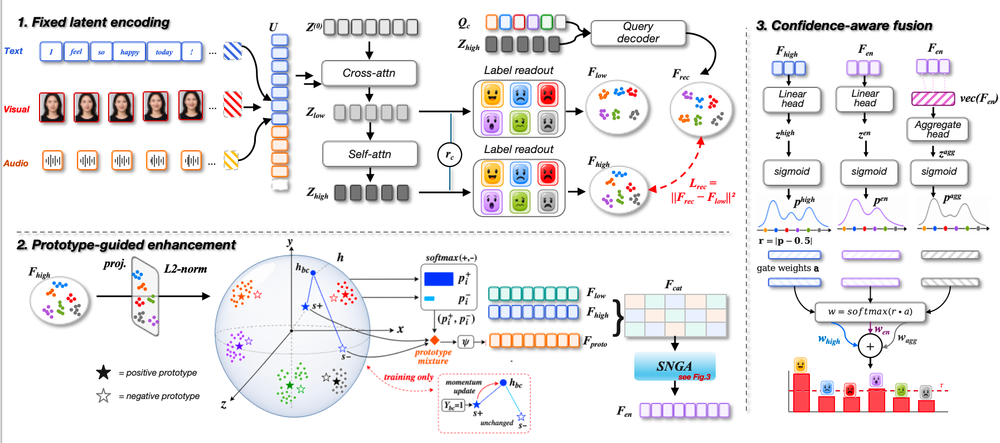

Fixed latent encoding
Fourier-based feature preprocessors project text, vision, and audio into a shared channel space. Cross-attention compresses the joint sequence into 80 learnable latent vectors, followed by latent self-attention.
Official project page and implementation

Multi-modal multi-label emotion recognition (MMER) requires identifying co-occurring emotions from textual, acoustic, and visual cues. Existing Transformer-fusion methods rely on dense self-attention over long concatenated multi-modal sequences, making them computationally heavy and brittle when modalities are incomplete. MERP is a Perceiver-IO based framework that distils the joint sequence into a small bank of learnable latent vectors through cross-attention and decodes label-specific scores using learnable label queries. The latent bottleneck aggregates information by content similarity, suppresses zero-padded missing tokens, and decouples representation cost from input length. A label-attentive enhancement branch, prototype-based supervised contrastive learning, spectral noise-gated attention, and gated multi-branch fusion further shape a discriminative and missingness-robust latent space.
Method
MERP moves cross-modal reasoning away from the long input sequence and into a compact set of learnable latents.
Fourier-based feature preprocessors project text, vision, and audio into a shared channel space. Cross-attention compresses the joint sequence into 80 learnable latent vectors, followed by latent self-attention.
Class-specific positive and negative prototypes guide supervised contrastive learning. Dynamic momentum updates and spectral noise-gated attention improve the discriminability of emotion representations.
Low-level, high-level, and enhanced predictions are combined by learnable confidence-aware gates, producing calibrated scores for six co-occurring emotion labels.
Experimental results
Results reported in the anonymous manuscript under 20% test-time random modality drop.
micro-F1
micro-F1
MERP remains the strongest evaluated method across every tested missing-rate operating point on CMU-MOSEI (pmiss ∈ [0.0, 0.5]) while retaining the lowest deployment cost among competitive methods.
Implementation
The repository includes aligned and unaligned CMU-MOSEI loaders, configurable Perceiver IO components, prototype and contrastive objectives, missing-modality evaluation, and the default training launcher.
Browse the repository →# clone the repository
git clone git@github.com:Creative-zcx/MERP.git
cd MERP
# configure the data path, then train
chmod +x train.sh
./train.shThis work is currently an anonymous submission. Citation information will be added after publication.